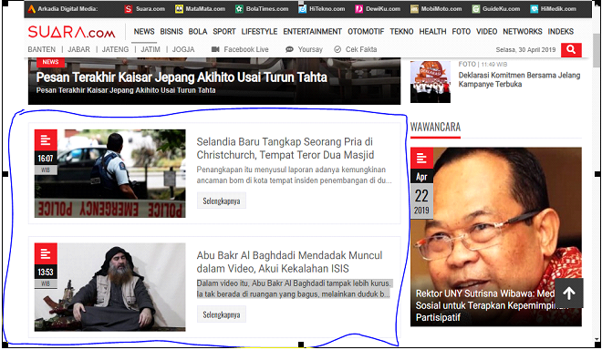
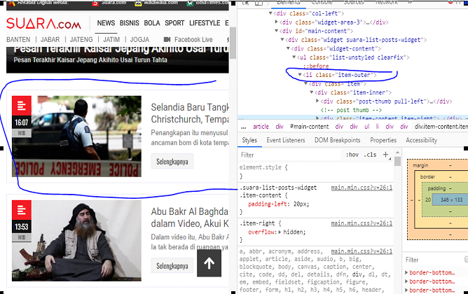
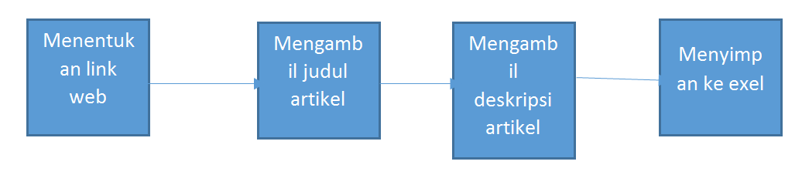

Pengenalan
Penambangan Web
web crawler
Assalamualaikum WR. WB
Nama :Moh Iqbal Okthapian
linkedin :linkedin.com/in/iqbal_okthapian
Pada kesampatan kali ini akan dijelaskan mengenai web crawler Apa itu web crawler?
Yang Diperlukan
Bahasa Python, dengan library:
- BeautifulSoup4 (install menggunakan pip)
- requests (install menggunakan pip)
- SQLite3 (library bawaan python)
- csv (library bawaan python)
- numpy (install menggunakan pip)
- scipy (install menggunakan pip
- scikit-learn (install menggunakan pip, perlu untuk install numpy dan scipy terlebih dulu)
- Scikit-fuzzy (install menggunakan pip, perlu untuk install numpy dan scipy terlebih dulu)
Pengertian
Web crawler adalah suatu program atau script otomat yang relatif simple, yang dengan metode tertentu melakukan scan atau “crawl” ke semua halaman-halaman Internet untuk membuat index dari data yang dicarinya. Nama lain untuk web crawl adalah web spider, web robot, bot, crawl dan automatic indexer. Web crawl dapat digunakan untuk beragam tujuan. Penggunaan yang paling umum adalah yang terkait dengan search engine. Search engine menggunakan web crawl untuk mengumpulkan informasi mengenai apa yang ada di halaman-halaman web publik. Tujuan utamanya adalah mengumpukan data sehingga ketika pengguna Internet mengetikkan kata pencarian di komputernya, search engine dapat dengan segera menampilkan web site yang relevan.
- Karena untuk crawler kita butuh link ,maka langkah pertama adalah kita tentukan dahulu link yang akan kita crawler Pada kasus ini saya menggunakan link :
https://www.suara.com/news/news-category/internasional

Diatas adalah tampilan webnya.
- Langkah selanjutnya adalah kita mencari tahu artikel tersebut ada diantara tag apa, maka kita perlu inspect element HTMLnya

Untuk tag per artikel sudah ditemukan yaitu pada tag li dengan class=” item-outer” dan untuk judulnya ada di tag h4 dengan class=”past-title”
Maka kodenya adalah:
html=urlopen("https://www.suara.com/news/news-category/internasional").read()
soup=BeautifulSoup(html,"lxml")
ar= soup.find_all("li","item-outer")
i=1
judul=[]
for j in ar:
dapat_judul=j.find('h4','post-title').get_text().replace("\n","")
judul.append(dapat_judul)
print(judul)
Kode diatas kita sudah mendapatkan judulnya, lalu kita akan mendapatkan deskripsi dari artikelnya , caranya sama seperti kode diatas namun kita harus mendapatan linknya tiap artikel terlebih dahulu
links = []
deskripsifull=[]
for link in soup.findAll('a','ellipsis2'):
links.append(link.get('href')) #menyimpan link
print(links)
Diatas untuk linknya berada di dalam tag a dan dengan class 'ellipsis2' , berbeda dengan cara sebelumnya kali ini kita mengambil linknya menggunkan link.get('href'))
Kita kan mengambil deskripsi tiap artikel , caranya sama seperti langkah awal namun dalam hal ini kita berikan perulangan sesuai judul yang kita crawl , dan di ambil deskripsinya satu satupersatu
des=[]
for i in links:
deslink=urlopen(i).read() #membuka link 1per1
soup1=BeautifulSoup(deslink,"lxml")
ketdes= soup1.find_all("article")
da=[]
for j in ketdes:
desk=""
konten= soup1.find_all('article','content-article')
for i in soup1.find('article','content-article').find_all('p'):
desk=desk+i.text
if(not desk in des):
des.append(desk)
if(not desk in des):
des.append(desk)
Kode diatas digunakan agar jika ada kesalahan saat crawl ,missal ada data yang sama maka data tidak akan dimasukkan ,jadi hanya mengambil data yang berbeda saja tiap artikel dan saya tampung di Array .
Karena pada data juga ada karakter yang tidak penting missal, jarak spasi yang terlalu panjang ,atau baris yang terlalu lebar,bias juga tanda petik,dll maka diperlukan perbaikan:
print(len(des))
for j in des:
print(j.replace('"',' ').replace('.',' ').replace('/',' ').replace(',',' ').replace('""',' '))
print("==========================================")
Setelah data judul sudah didapatkan sekarang kita buat menjadi file exel
data = pd.read_csv("dataku.csv")
# Preview the first 5 lines of the loaded data
deskr=[]
for i in data['deskripsi']:
deskr.append(i)
print(deskr)
Pada penjelasan disatas dapat disimpulkan bahwa untuk crawl alurnya seperti ini:

Setelah kita mendapatkan datanya lalu kita melakukan Text Prosesing.